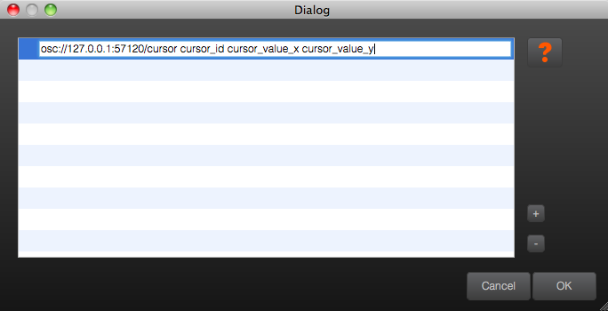

| Introduction | Objets fondamentaux |
Messages émis et reçus |
Interface graphique |
Scripts | Référence | Index des fonctions |
Principe
La gestion des messages est la fonction principale de IanniX. Ils peuvent être
envoyés par les curseurs et les triggers.
Pour savoir si les messages sont effectivement reçus ou envoyés, IanniX en affiche
une trace dans la
« Messages » de l'inspecteur.
b>Les triggers n'envoient généralement qu'un seul message au passage du curseur
et IanniX limite l'envoi à 1 message par milliseconde maximum.
Les curseurs génèrent par défaut des messages toutes les 20 ms (mais vous pouvez modifier cette période).
Contruction d'un message
Schéma général
Pour construire un message dans IanniX, vous devez le formater suivant le modèle ci-dessous :
<protocol>://<destination>/<address>
<arguments>
Protocoles
- osc (Open Sound Control), l'IP, le port et l'adresse doivent être
spécifiés.
Exemple : - serial (ASCII Serial Port).
Exemple : - udp (Raw UDP, PureData compatible), l'IP et le port doivent être
spécifiés.
Exemple : - http (GET Request), construction URL standard
Exemple : - midi (MIDI Protocol), le port doit être spécifié sans espaces ni slashes +
note,cc,bendoupgm (program change).
Exemple :
Exemple : directEnvoi d'un message direct à IanniX pour des commandes ultra-rapides.
Exemple :
Arguments
Les arguments consituent les données utiles du message IanniX. Il s'agit d'une succession de variables qui décrivent l'état d'un objet au moment où le message est envoyé. Ces variables sont détaillées dans la rubriques références pour les triggers et les curseurs.
Outre les variables, vous pouvez bien sûr spécifier des valeurs ou chaînes de caractères directement dans le message.
Enfin, trois variables globales peuvent être utilisées dans tous les messages :
nb_triggersnombre de triggersnb_curvesnombre de curseursnb_cursorsnombre de courbes
Éditer les messages envoyés
Pour éditer le message qu'un objet doit envoyer, cliquez sur "Edit" dans l'inspecteur après avoir sélectionné l’objet ou double-cliquez sur l’objet lui-même pour faire apparaître cette fenêtre :
|  |
Double-cliquez sur le message pour le modifier. Cliquez sur « - » pour le supprimer et sur « + » pour ajouter d'autres messages.
Réception d'un message
IanniX peut être controlé par :
osc(Open Sound Control), le port par défaut est1234, l'adresse par défaut est/iannix
Exemple dans PureData :serial(ASCII Serial Port)
Exemple avec Arduino :udp(Raw UDP, PureData compatible), le port par défaut est1235.
Exemple dans PureData :http(GET Reply)
Exemple en PHP :midi(MIDI Protocol)directEnvoi d'un message direct à IanniX pour des commandes ultra-rapides.
Exemple :nxscript file(JavaScript), un exemple est donné avec IanniX
Exemple :
Vous devez respecter ces syntaxes pour que IanniX puisse lire vos messages. Consulter les documentations de vos logiciels respectifs pour formater correctement l'envoi de vos informations.
Toutes les fonctions supportées par IanniX sont décrites dans la référence.
Détails des messages MIDI
- Le port de sortie doit être spécifié sans espaces ou slashes.
- Sur les systèmes Macintosh (et Linux ?), IanniX créé un port de sortie virtuel appelé
IanniX_Outqui peut être ouvert dans d'autres applications MIDI. - Les autres ports MIDI disponibles sont listés dans IanniX dans la vue Message de l'inspecteur.
- Les paramètres d'un message MIDI sont convertis en entier si nécessaire et sont tronqués au rang requis.
Messages MIDI Note-On/Note-Off
- Format :
- Format :
- Le canal doit être dans un rang entre 0 et 15 (correspondant aux canaux MIDI de 1 à 16).
- La note doit être dans un rang entre 0 et 127.
- La durée est exprimée en milli-secondes. Ex : 1000 est une seconde.
- Le paramètre de durée est optionnel. S'il est omis, le note-off ne sera pas automatiquement envoyé. Le message note-off (vitesse nulle) doit être envoyé par d'autres moyens.
- Le paramètre optionnel de la durée dans le message est prévu lorsque l'on veut une variable durée de la note, définie par les paramètres de la partition chaque fois que le message est triggé.
- Une note de vélocité zéro est égale à note-off.
Messages MIDI CC
- Format :
- Le canal doit être dans un rang entre 0 et 15 (correspondant aux canaux MIDI de 1 à 16).
- Le contrôleur doit être dans un rang entre 0 et 127.
- La valeur doit être dans un rang entre 0 to 127.
- Voir une spécification MIDI ou la documentation de votre synthétiseur pour les nombres contrôleurs disponibles et comment ils vont affecter le son.
Messages MIDI Pitch Bend
- Format :
- Le canal doit être dans un rang entre 0 et 15 (correspondant aux canaux MIDI de 1 à 16).
- La valeur bend doit être dans un rang entre 0 et 16383.
- Une valeur bend de 8192 spécifie un bend de zéro. Les valeurs en-dessous diminuent le bend et les valeurs au-dessus l'augmentent.
Messages MIDI Program Change
- Format :
- Le canal doit être dans un rang entre 0 et 15 (correspondant aux canaux MIDI de 1 à 16).
- La value du pgm doit être dans un rang entre 0 et 127.
- Pour beaucoup de synthétiseurs, le message Program Change sélectionne un nouveau programme, patch ou son avec le nombre dans la banque de son.
Toutes les fonctions supportées par IanniX sont décrites dans la référence.
Javascript en Messages
Les expressions Javascript peuvent être utilisées dans les messages n'importe où un argument peut être placé.
Basiques
- Une expression Javascript est indiquée entre accolades, séparée des autres arguments par au moins un espace.
- N'importe quelles variables (voir la section Référence) disponibles pour un message normal sont aussi disponibles pour utiliser des expressions Javascript.
- La valeur insérée dans un message par une expression Javascript est la valeur retournée par l'expression, ou par la dernière expression seule si l'expression complète consiste en plusieurs déclarations.
- En plus des capacités de Javascript, un certain nombre de fonctions sont fournies pour les calculs souvent nécessaires. (Voir la section Scripts).
- Il est possible de construire expressions utiles même avec des connaissances limitées de Javascript. La syntaxe est aussi très similaire du C ou du Java. Pour apprendre le Javascript, vous pouvez vous référer aux nombreux tutoriels ou documents de référence présents sur Internet, ou dans les livres sur le Javascript.
Exemples :
- Ce message envoie la somme de cursor_xPos et de cursor_yPos :
- Ce message envoie le sinus de trois fois cursor_angle. Le sinus qui
retourne des valeurs de -1 à 1 est échelonné de 0 à 1 :
- Ce message MIDI envoie des nombres de note basés sur cursor_angle (rang de 0 à
360), échelonné des rangs 60 à 100:
- Ce message MIDI envoie des nombres de note basés sur cursor_angle échelonnés des rangs
60 à 100, la vélocité des notes des rangs 70 à 127 basé sur
cursor_time_percent, et des durées de notes aléatoires de 200 milli-secondes à
1000 milli-secondes.
Actions Conditionnelles
- Un opérateur conditionnel Javascript de la forme
permet à l'évaluation de l'expression d'être altérée en fonction d'un test de logique des variables. - Exemple : Ce message envoie zéro lorsque cursor_time vaut moins que 2 et
envoie trigger_xPos si le temps vaut plus que 2.
- Exemple : Ce message envoie la distance de collision échelonné des rangs 0 à
1, mais uniquement si cursor_angle vaut plus que collision_angle. Autrement
le message envoie zéro. Note : L'échelonnage assume que collision_distance est entre
0 et 5.
Suppression d'un Message
- Un message est supprimé (pas envoyé) si n'importe laquelle des expressions renvoie la chaîne "suppress".
- Exemple : Le message suivant envoie 1 si le côté droit du cursor
rencontre un trigger. Le message n'est pas envoyé si le côté gauche du curseur
rencontre le trigger.
- Exemple : Les variables de curseur de type
collision_<variablename>(ex : collision_xPos)ont seulement une valeur significative lorsqu'il y a collision avec une courbe. Cependant, les messages d'un curseur sont produits continuellement pendant que la partition est jouée. Par conséquent, lorsqu'il n'y a pas de collision ces variables retournent "no". Une expression conditionnelle peut être utilisée pour supprimer le message sauf lorsqu'il y a collision.
- Exemple : Seul ce message est envoyé si le trigger est dans le même groupe que
le curseur rencontré. S'il est envoyé, le message inclut trigger_id, trigger_xPos et
trigger_yPos.
Erreurs
- Si une expression contient une erreur, le texte "**error**" est retourné et apparaît dans le message à la place de la valeur retournée.
- Les erreurs dans les messages peuvent être vérifiées dans la fenêtre Message de l'inspecteur pendant que la partition est jouée.
- Les erreurs peuvent inclure des erreurs de syntaxe Javascript ou des références à des variables ou des fonctions inexistantes.
Récursivité
IanniX peut être contrôlé par IanniX lui-même (!). Vous pouvez utiliser tous les
protocoles décrits précédemment mais nous vous recommandons d'utiliser l'OSC pour
communiquer entre deux IanniX sur des ordinateurs en réseau et d'utiliser la
commande direct pour envoyer des messages à l'intérieur même de
IanniX.
Exemple : or
|
Copier/coller cet exemple dans IanniX pour comprendre le fonctionnement du
code !
add curve 1
|